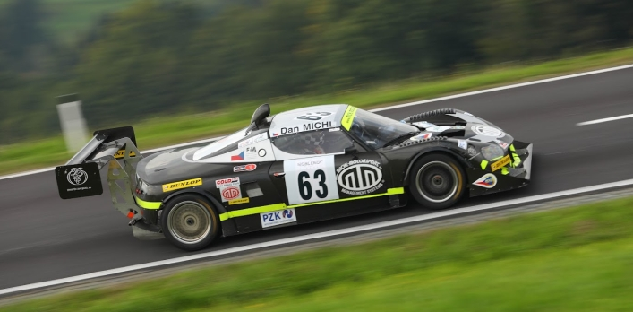
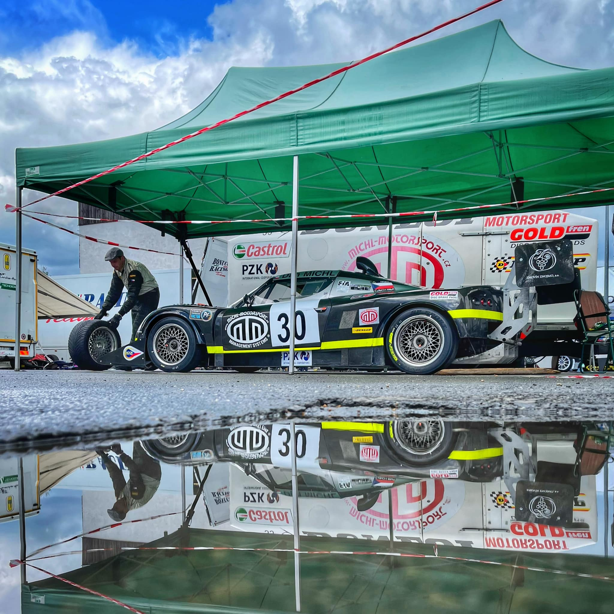
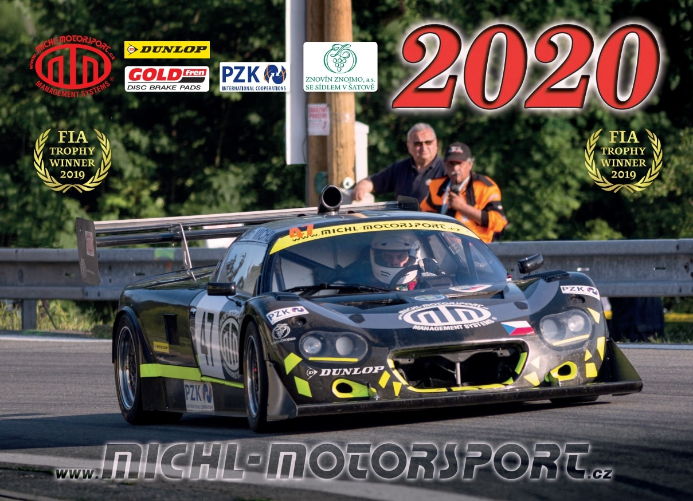

MIchL MOTORSPORT
Nejčerstvější informace, výsledky, videa a fotky k probíhající sezóně najdete vždy ZDE.
V roce 2024 můžete Dana Michla sledovat na evropských kopcích, kde se se svým vozem Lotus Elise účastní vrchařské série FIA International Hill Climb Cup a bojuje v kategorii 1, více ZDE.
Pro rok 2023 se stal Dan Michl v rámci evropské vrchařské série FIA International Hill Climb Cup vítězem Poháru FIA. I letošní sezóna byla poměrně krátká, ale náročná, a listopadové vyhlášení výsledků a předávání pohárů v portugalské Braze bylo jejím vyvrcholením.

Sezóna 2022 patřila mezi nejkratší kompletní závodní sezóny, v rámci FIA International Hill Climb Cupu se odjely pouze čtyři závody. Dan Michl mimo jiné díky vítězství v německém Osnabrücku opět vybojoval titul a stal se vítězem Poháru FIA v kategorii 1.

Krátká a náročná sezóna 2021 odstartovala u nás, na zkrácené verzi Ecce Homo ve Šternberku, a Dan Michl si odsud odvezl první body do seriálu Mistrovství ČR. V rámci sezóny se účastnil i zkráceného Poháru FIA International Hill Climb, kde nakonec skončil na druhém místě.
Více ZDE
Sezóna 2020 nebyla motorismu (vlastně ani jiné činnosti) příliš nakloněna.

Mrkněte zatím na video našeho týmu (Porsche 911 RS + Josef Michl, Lotus Elise + Dan Michl, MTX 1-03 - Ondřej Chytil) na Ecce Homo Šternberk v roce 2017 - najdete ho TADY, anebo na záznam jízdy Dana Michla z roku 2014, kdy se jel první výběrový závod FIA Hill Climb Masters v lucemburském Eschdorfu - zde.
A sezóna 2020 vstoupí do dějin jako sezóna, kterou si nikdo nechce pamatovat